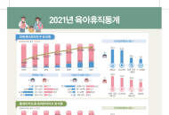

주해
①국제 통화 기금 (International Monetary Fund (IMF))의 약자로, 국제 통화 기금은 환율과 국제 수지를 감시함으로써 국제 금융 체계를 감독하는 것을 위임받은 국제 기구이다.회원국의 요청이 있을 때는 기술 및 금융 지원을 직접 제공한다.
본부는 미국 워싱턴 D.C.에 있다.

[이데일리 김아름 기자] 국제통화기금(IMF)은 현재 한국의 주택 가격이 과도하게 높은 수준이며 장기간 하락할 수 있다고 전망했다.
15일(현지시간) IMF①가 홈페이지에 게재한 ‘아시아·태평양 지역의 주택시장 안정성과 구입 능력’ 보고서에서 △역대 추세와 최근 주택 가격간 불일치 △단기 금리 △잠재 성장률과 실질 성장률 간 격차 △가계 신용 등을 고려해 주택 가격 위험 분석을 한 결과 이같이 추정됐다고 밝혔다.
IMF 보고서는 팬더믹 기간에 재택근무 확대에 따른 주택 수요가 확대되고 낮은 모기지 금리와 정부의 대규모 재정 지원 등의 이유로 아태 지역에서 주택 가격이 상승했다고 분석했다.
특히 IMF는 한국의 부동산 가격이 큰 폭으로 오른 것은 가격 상승에 대한 과도한 기대 때문이라고 주장했다. 그동안의 주택 가격 상승에 기여한 항목을 현재 가격, 금리요인, 아웃풋 갭, 가격 불일치분 등으로 나눈 결과 실제 가격 불일치가 상당히 큰 것 으로 나타난 것이다. 불일치는 과거의 소득 대비 주택가격에 비해 추세를 벗어난 정도로 측정된 값으로 비정상적인 가격 상승요인이라는 의미다.
IMF는 보고서를 통해 “가격 불일치가 큰 상황에서 정책금리 인상이 결합하면 과거의 주택 가격 붕괴 사태와 유사한 상당기간의 가격조정으로 이어질 수 있다”라며 “특히 가계부채가 많은 국가들은 주택 조정이 실물 경제와 금융 부문 안정성에 미치는 영향을 증폭시킬 수 있다”고 했다.
IMF는 지난해 연말을 기준으로 했을 때 한국 집값이 코로나 시작 전인 지난 2019년 말과 비교해 올해
말까지 10%P 정도 하락할 수 있다고 봤으며 여기에 금리 인상까지 더하면 하락 폭은 더 커질 것이라고
예측했다. 조심해야겠다.

| 1 | 정부 “다주택자들 집 더 사라”...부동산 세제·금융 규제 다 푼다[2023 경제정책] | |
| 2 | 푸틴 최측근, 친서 들고 시진핑 찾아“평화회담 통한 문제해결 원해” | |
| 3 | 작년 육아휴직 4명 중 1명은 아빠···그중 70%는 대기업 다니는 아빠 |  |